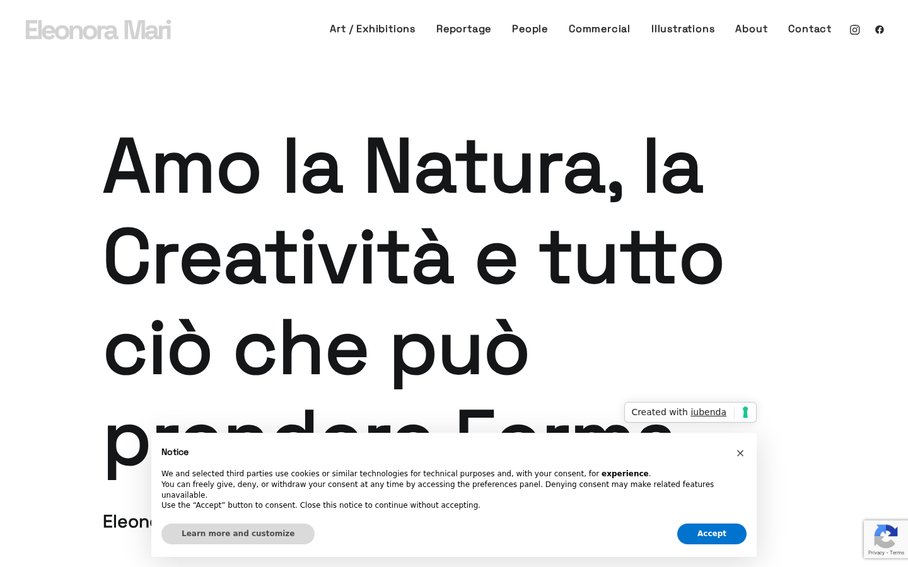
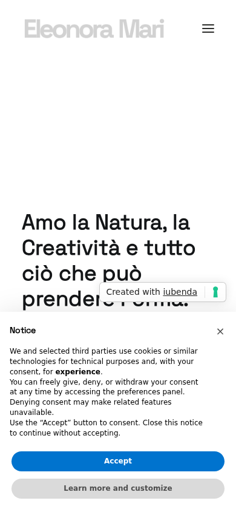
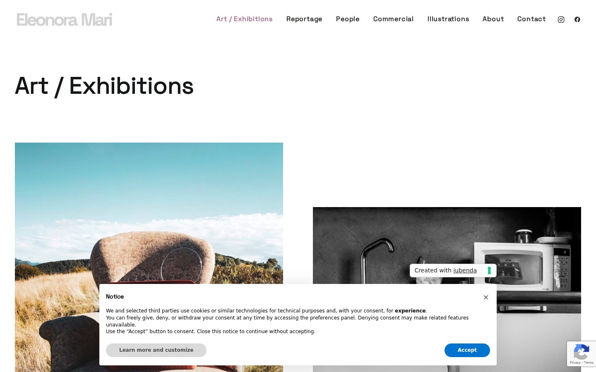
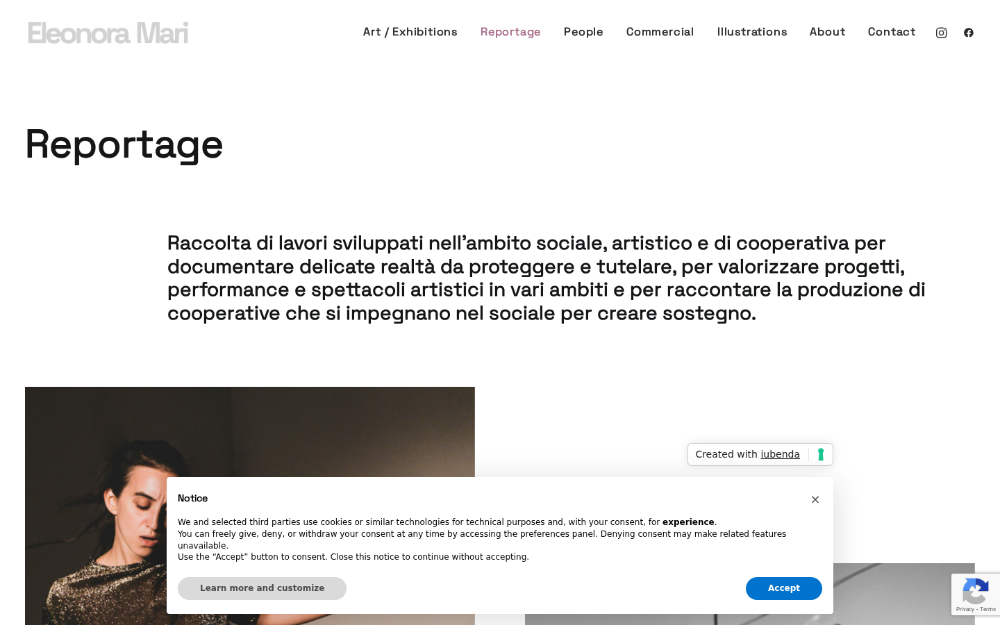
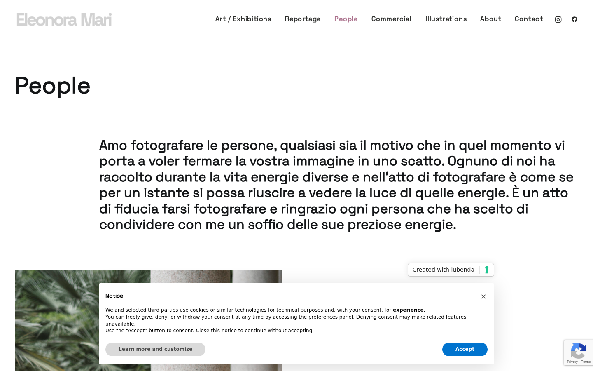
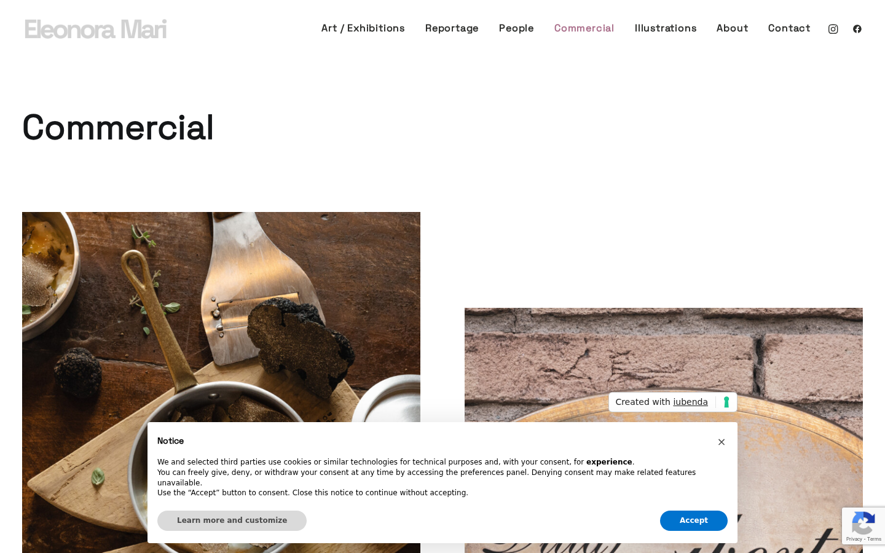

Il sito eleonoramari.com risponde correttamente dal nuovo server Tanuki (Hetzner). Tutte le pagine si caricano, le immagini funzionano, nessun errore JavaScript, SSL valido. La navigazione completa (7 sezioni) funziona sia da desktop che da mobile.
La homepage si carica correttamente con il titolo, la navigazione completa (Art/Exhibitions, Reportage, People, Commercial, Illustrations, About, Contact), i link social e il cookie banner iubenda. Tempo di caricamento: 2.1 secondi.


Abbiamo visitato 4 pagine interne del sito — Art/Exhibitions, Reportage, People e Commercial. Tutte si caricano correttamente con le immagini del portfolio, i testi descrittivi e la navigazione. Nessuna immagine rotta, nessun errore.




L'endpoint di controllo system-check.php conferma che il sito risponde dal server Tanuki (Hetzner, IP 188.245.145.207). La migrazione da Cloudways/Octopus è completa. PHP 8.3, 65.7 GB di disco disponibile.
Il certificato SSL è valido, emesso da Google Trust Services, scade il 24 aprile 2026. Il sito è servito tramite Cloudflare con HTTP/2. Nessun problema di sicurezza rilevato.
Nessun errore JavaScript in console, nessuna richiesta HTTP fallita (4xx/5xx), nessuna immagine rotta su nessuna delle pagine visitate. Tutto pulito.
| Campo | Valore |
|---|---|
| Dominio | eleonoramari.com |
| Tipo sito | WordPress (Uncode theme) |
| Origine | Cloudways / Octopus |
| Destinazione | Hetzner / Tanuki (188.245.145.207) |
| CDN | Cloudflare (HTTP/2) |
| PHP | 8.3.30 |
| Disco libero | 65.7 GB |
| Uptime server | 23 ore |
| Scenario | Post-deploy check |
| Verdict | PASS |
| Pagina | Tempo | Stato |
|---|---|---|
| Homepage | 2.11s | OK |
| Art / Exhibitions | 2.57s | OK |
| Reportage | 2.49s | OK |
| People | 2.39s | OK |
| Commercial | 2.50s | OK |
| Campo | Valore |
|---|---|
| Validità | Valido |
| Emittente | Google Trust Services |
| Subject | eleonoramari.com |
| Scadenza | 24 aprile 2026 |
| Check | Risultato |
|---|---|
| HTTP Response | 200 OK (HTTP/2) |
| Errori console JS | 0 |
| Richieste HTTP fallite | 0 |
| Immagini rotte | 0 |
| SSL valido | Si |
| Server corretto (Tanuki) | Confermato |
| Navigazione interna | 7/7 link funzionanti |
| Layout mobile | Responsive OK |